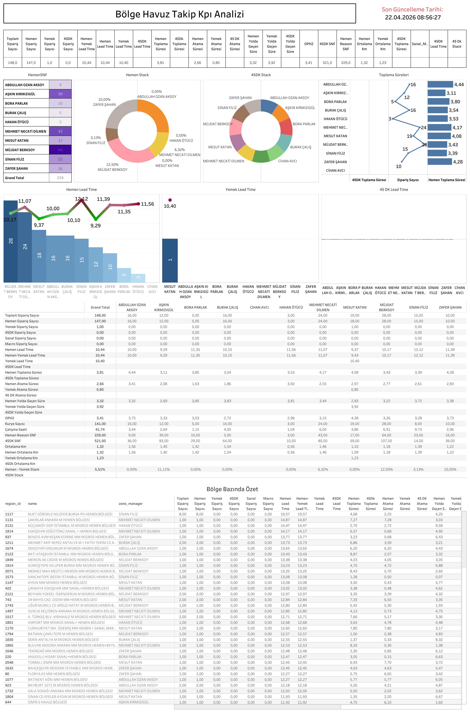

Canlı Rapora Erişin
Güncel bölge havuz KPI verilerini Tableau üzerinde interaktif olarak görüntüleyin.
Dashboard Hakkında
Ne Gösterir?
Bölge Havuz Takip KPI Analizi, her bölge müdürüne ait havuz bazlı operasyonel performansı tek ekranda sunar. HemenSNF dağılımı, Hemen ve 45DK stack oranları ile toplama süresi metriklerini anlık olarak izlemenizi sağlar.
- Sipariş Metrikleri: Toplam, Hemen, Yemek ve 45DK sipariş sayıları bölge bazında karşılaştırmalı
- Lead Time Analizi: Hemen, Yemek ve 45DK operasyonlarına ait lead time eğrileri ve ortalamalar
- Toplama & Atama Süreleri: Hemen ve 45DK toplama süresi, atama süresi ve yolda geçen süre
- Stack Dağılımı: HemenSNF bazlı Hemen Stack ve 45DK Stack pasta grafikleri
- Bölge Bazında Özet: Tüm bölgelerin sipariş, lead time ve süre metriklerini içeren detaylı tablo
Dashboard Önizleme

Bölge Havuz Takip KPI Analizi — Tableau